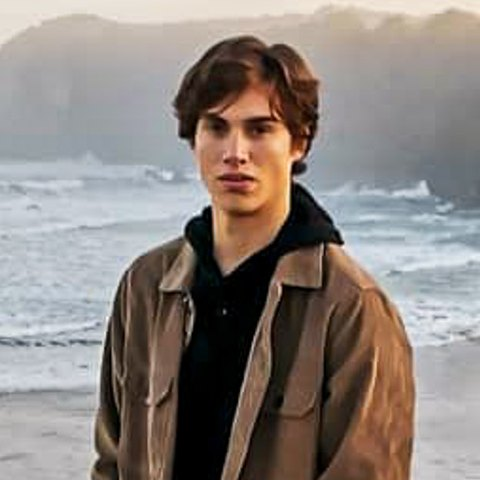

Luke Edwards
Gold Coast, Australia
I study Computer Science at Griffith University, majoring in Data Science and AI, and I'm working toward a career in cloud security.
I'm sitting CompTIA Security+ in November and AWS Cloud Practitioner in December. I'm looking for IT, cyber security or cloud work from early 2027, on the Gold Coast, in Brisbane or remote.
Certifications
- Nov 2026
- CompTIA Security+ (SY0-801)Studying now, exam in November
- Dec 2026
- AWS Certified Cloud PractitionerStudying now, exam in December
Education
- 2024 to 2028
- Bachelor of Computer Science, Griffith UniversityMajors in Data Science and AI, and Algorithms and Computing. Part-time. GPA 6.40 out of 7. High Distinctions in Computer Systems and Cyber Security, Deep Learning and Intelligent Systems. Griffith Award for Academic Excellence, 2025.
- 2021
- Bachelor of Science and Bachelor of Arts, University of OtagoComputer Science, studied February to October 2021.
Skills
- Code
- Python, PyTorch, TypeScript, Git
- Systems
- Linux, Windows
- Studying
- Security operations and incident response, AWS and IAM, TryHackMe SOC Level 1
Work
- 2023 to now
- Gardener, Dreamworld / WhiteWater WorldEarly starts across two busy theme parks, working safely around guests and rides while I study.